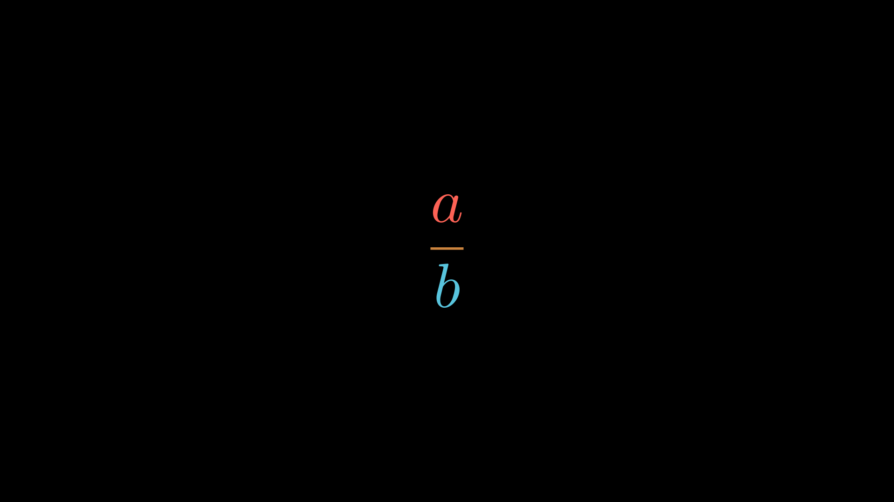

Fraction
class Fraction1(Scene):
def construct(self):
frac = Fraction("a", "b")
self.add(frac)
frac.numerator.set_color(RED)
frac.vinculum.set_color(LIGHT_BROWN)
frac.denominator.set_color(BLUE)
Fraction Equation Operation
class Fraction2(Scene):
def construct(self):
V, I, R = MathTex("V", "I", "R")
tex = MathTex(V, "=", [ I, R ])
self.add(tex).wait(1)
tex.LHS = Fraction(V, I.pop())
self.play(TransformInStages.progress(tex))
self.wait(1)
tex.LHS = V
tex.RHS.terms = [ I, R ]
self.play(TransformInStages.progress(tex))
Adding Fractions
class FractionMerge(Scene):
def construct(self):
a = MathTex("a", color=RED)
b = MathTex("b", color=BLUE)
c = MathTex("c", color=GREEN)
frac1 = Fraction( Term(b, 2), [ 4, Term(a, 2) ])
frac2 = Fraction([ 4, a, c ], [ 4, Term(a, 2) ])
tex = MathTex(frac1, "+", frac2)
self.add(tex)
frac1.numerator = MathTex(frac1.numerator, tex[1], frac2.numerator)
frac1.denominator.merge(frac2.denominator)
tex.terms = [ frac1 ]
self.play(TransformInStages.progress(tex, lag_ratio=0.5))